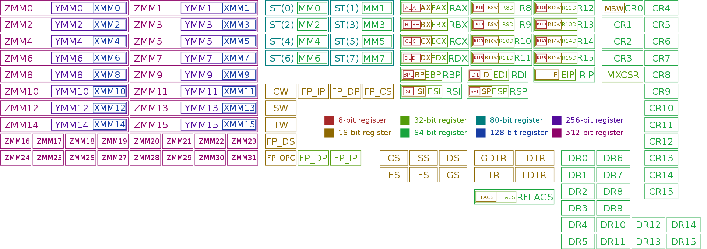
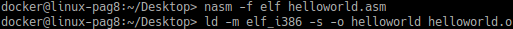
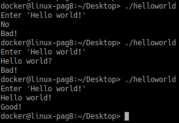
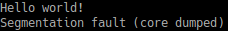

Assembly
De Assembly programmeertaal zelf heeft niet direct met security te maken. De reden dat ik dit onderdeel in mijn portfolio beschrijf is omdat ik dit zelf erg interessant vind en omdat Assembly vaak terugkomt bij bijvoorbeeld reverse engineering of malware inspectie. Het is naar mijn mening dan ook goed om hier basiskennis van te hebben.
https://www.tutorialspoint.com/assembly_programming/assembly_basic_syntax.htm
Een processor begrijpt alleen machinetaal, dit zijn reeksen van 1 en 0. Machinetaal is echter te complex om te gebruiken bij normaale softwareontwikkeling. Assembly is ontworpen om deze complexe machinetaal op een leesbare manier te kunnen gebruiken. Assembly is per CPU-architectuur verschillend, de instructies en syntax is op een Intel x86 architectuur anders dan als op een ARM-architectuur. Ik ga in dit onderdeel in mijn portfolio alleen in op de Intel x86 architectuur omdat ik zelf hier het vaakst mee werk.
Assembly werkt met instructies, dit is niet hetzelfde zoals code in Java, C# of C++, waar gebruik gemaakt wordt van operators, sepperators, variablen en identifiers. De volledige lijst van instructies zijn hier te zien. De instructies kunnen variablen van registers ophalen/verplaatsen en bepaalde logische berekeningen hierop uitvoeren. Enkele veel gebruikte instructies leg ik specifiek uit:
Een register is intern geheugen wat zich binnenin de processor bevindt, hier worden waarden opgeslagen die de processor direct kan gebruiken. Registers zijn vele malen sneller het RAM-geheugen. Een variable kan wel uit het RAM-geheugen gehaald worden en in deze registers geplaatst worden. Registers hebben vaak een vast bepaalde functie. Deze registers zijn ook per bit grote verschillend en hebben dan ook verschillende namen. Enkele registers leg ik specifiek uit:
De eerste vier (32 bit benaming) EAX, EBX, ECX, EDX hebben tegenwoordig dezelfde functie. Hieronder een afbeelding met alle registers van de Intel x86 instructieset met de range van 8 bit naar 512 bit:
Afbeelding 1 Intel x86 registers
De syntax van Assembly heeft een ander uiterlijk dan andere code's zoals C, C# of Java. Een regel code bestaat uit een instructie, vervolgens parameters. Hieronder enkele voorbeelden van Assembly regels code:
De bovenstaande code doet eigelijk niets anders dan een waarde ophalen uit een register, met elkaar verglijken. Als deze gelijk is dan voeg 1 aan de waarde toe, anders ga verder met de code. Het verloop van de code is de waarde terug zetten in het register waar hij vandaan kwam. Dit is eigenlijk een gewone if statement.
Functies kunnen ook aangemaakt worden, deze zien er hetzelfde uit als labels. Als labels vanaf buiten de code benaderbaar moeten zijn, dan moeten deze met 'global' benoemd worden. Meestal wordt dit alleen bij de main functie gedaan.
In Assembly is het ook mogelijk om comments te plaatsen, deze worden met een ';' gedefinieerd. Twee voorbeelden hiervan staan hieronder:
De instructies en parameters kunnen ook als kleine letters geschreven worden. De werking is niet anders, het is meer een persoonlijke keuze.
Nummers kunnen aangegeven worden in verschillende manieren worden opgeschreven, het is van belang om het type aan te geven. De voorkeur bij Assembly gaat uit naar hexadecimaal.
De code van Assembly wordt onderverdeeld in secties. De drie belangrijke secties zijn .data, .bss en .text
Hieronder is de code te zien van mijn "Hello world!" die ik gemaakt heb. Niet eerder benoemde instructies heb ik extra beschreven met comments. De .asm Assembly source code is ook te vinden in mijn Git onder de map Assembly.
section .data
welcome_message DB "Enter 'Hello world!'", 0x0A
welcome_message_length EQU $-welcome_message
expected_input DB "Hello world!", 0x0A
expected_input_length EQU $-expected_input
good DB "Good!", 0x0A
good_length EQU $-good
bad DB "Bad!", 0x0A
bad_length EQU $-bad
section .bss
user_input RESB 0x0C
section .text
global _start
_start:
MOV EAX, 0x04 ; 0x04 is de systemcall voor write
MOV EBX, 0x01 ; 0x01 is stdout
MOV ECX, welcome_message
MOV EDX, welcome_message_length
INT 0x80
MOV EAX, 0x03 ; 0x03 is de systemcall voor read
MOV EBX, 0x02 ; 0x02 is stdin
MOV ECX, user_input
MOV EDX, expected_input_length
INT 0x80
MOV EBX, expected_input_length ; Plaatsen van de verwachte bytes lengte in het EBX register
CMP EAX, EBX ; Verglijken van de gelezen bytes van de stdin (EAX) en de verwachte lengte
JNE print_bad ; Als de lengte niet hetzelfde is skip andere verglijkingen en print fout
LEA ESI, [expected_input] ; Plaats geheugenaddress van de expected input naar het ESI register
LEA EDI, [ECX] ; Plaats geheugenaddress van de userinput naar het EDI register
MOV ECX, expected_input_length ; Plaats verwachte lengte naar het ECX register
REP CMPSB ; Verglijken van de string byte per byte, deze gebruikt de ESI, EDI en ECX registers
JNE print_bad ; Als deze niet hetzelfde is dan print fout
JE print_good ; Als ze hetzelfde zijn print goed
end: ; Definieer end functie
MOV EAX, 0x01 ; 0x01 is de systemcall voor exit
MOV EBX, 0x00 ; 0x00 is de foutcode (geen)
INT 0x80
print_bad: ; Definieer print fout functie
MOV EAX, 0x04
MOV EBX, 0x01
MOV ECX, bad
MOV EDX, bad_length
INT 0x80
JMP end ; Voer end functie uit
print_good: ; Definieer print goed functie
MOV EAX, 0x04
MOV EBX, 0x01
MOV ECX, good
MOV EDX, good_length
INT 0x80
JMP end ; Voer end functie uit
Vervolgens moet ik deze code compileren om hem te kunnen uitvoeren. Als deze gecompileerd is resulteerd dit in een .o bestand, dit bestand is object code en moet nog gelinkt worden aan libraries. In de onderstaande afbeelding zijn hier de commando's voor te zien. "elf" staat voor Executable and Linkable Format. Deze beschrijft het standaard binaire formaat wat onder UNIX-gebaseerde besturingssystemen draait.
Afbeelding 2 Compileren en linken
Na het compileren kan de executable uitgevoerd worden. Ik heb hier eerst een veel te kort antwoord gegeven, deze faalt al op de lengte check omdat de verwachting 13 karakters lang is en de gegeven waarde 2 is. De tweede keer heb ik wel de gevraagde 13 karakters, alleen een vraagteken in plaats van een uitroepteken. Deze komt dus niet overeen en word er alweer 'Bad!' geprint. Bij de derde geef ik wel de gevraagde text en zoals te zien is komt hij nu wel overeen en wordt het nu wel geaccepteerd.
Afbeelding 3 Output
Assembly is vrij nieuw voor mij en ik vond het vooral in het begin nog vrij lastig. Om hier mee te kunnen werken is er veel kennis nodig over de instructies en wat deze doen. Het programmeren met de registers is vrij eenvoudig te begrijpen, vooral als je hier een tijdje mee bezig bent. Ik had een vreemd probleem waardoor mijn programma crashte en een "Segmentation fault (core dumped)" error gaf. Het gekke was dat mijn applicatie precies deed wat het moest doen alleen deze er extra bij gaf. Uiteindelijk na veel zoeken waar het probleem lag, bleek het dat ik een "return" vergeten was. Het is wel even wennen dat wanneer er een exceptie optreedt, dat er geen info of dergelijke te zien is maar een vrij abstracte foutmelding.
Afbeelding 4 Crash
Verder is dit wel een heel erg leerzaam onderdeel en ik ben blij dat ik dit het toegevoegd om hier meer kennis van op te doen. Ik wil hier meer mee kunnen om bijvoorbeeld makkelijker gedecompileerde code te kunnen begrijpen. Dit is een onderdeel wat vaak toegepast wordt bij bijvoorbeeld malwareinspectie.